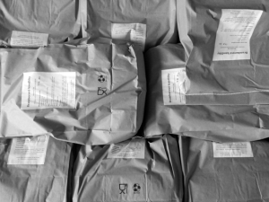
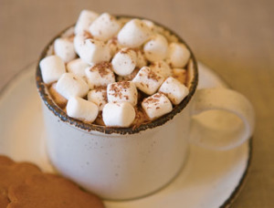

What we make
Our products
Five mixes we have supplied to households, restaurants, canteens and pastry shops across Bohemia and Moravia since 2004.

Potato dumpling mix
Our most sought-after product. Classic dumplings, poppy-seed rolls, croquettes and gnocchi from one dough.
5 kg / 165 CZK

Hairy dumpling mix (bosáky)
Traditional-recipe bosáky. Ready in 15 minutes, indistinguishable from home-made.
5 kg / 185 CZK
Gluten-free vanilla pudding
Gluten-free corn starch, natural vanilla taste. For desserts and baking.
1 kg / 34 CZK · 400 g / 17 CZK

Dutch-process cocoa
Dark confectionery cocoa with 21% fat. Rich colour and taste for cakes and drinks.
500 g / 100 CZK
Vanilla sugar
Finely ground sugar with vanillin aroma. For dough and for dusting pastries.
1 kg / 38 CZK